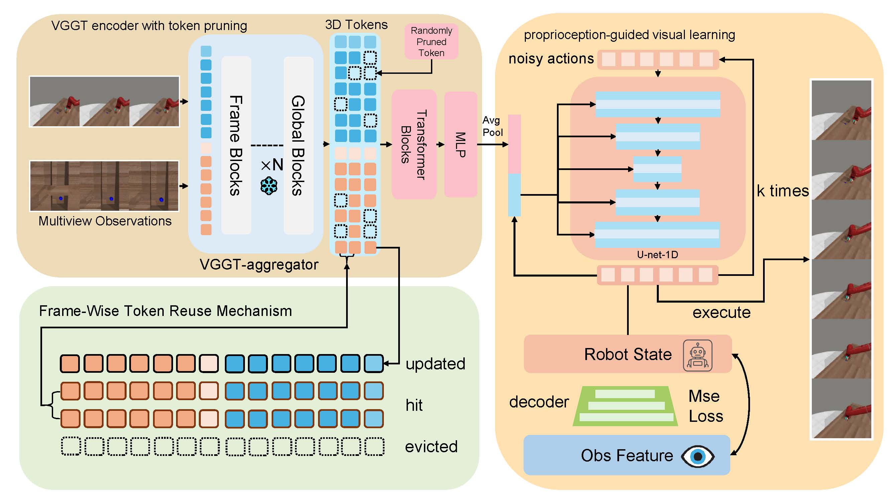

Overview of the VGGT-DP framework for generalizable robot control via vision foundation models.
Visual imitation learning frameworks allow robots to learn manipulation skills from expert demonstrations. While existing approaches mainly focus on policy design, they often neglect the structure and capacity of visual encoders—limiting spatial understanding and generalization.
Inspired by biological vision systems, which rely on both visual and proprioceptive cues for robust control, we propose VGGT-DP, a visuomotor policy framework that integrates geometric priors from a pretrained 3D perception model with proprioceptive feedback. We adopt the Visual Geometry Grounded Transformer (VGGT) as the visual encoder and introduce a proprioception-guided visual learning strategy to align perception with internal robot states, improving spatial grounding and closed-loop control.
To reduce inference latency, we design a frame-wise token reuse mechanism that compacts multi-view tokens into an efficient spatial representation. We further apply random token pruning to enhance policy robustness and reduce overfitting.
Experiments on challenging MetaWorld tasks show that VGGT-DP significantly outperforms strong baselines such as DP and DP3, particularly in precision-critical and long-horizon scenarios.
Keywords: manipulation, visuomotor policy, vision for robotics, representation learning
Our work builds upon several important areas of research in visuomotor control and robot learning.
Visual Imitation Learning: Methods like BC-O, DP, and DP3 have shown promising results in learning manipulation policies from expert demonstrations using visual observations.
Vision Foundation Models for Robotics: Recent works have explored leveraging pretrained vision models like CLIP, DINOv2, and specialized 3D perception models for robotic tasks.
Proprioceptive Integration: Combining visual and proprioceptive information has been shown to improve robotic control, inspired by biological sensorimotor systems.
Transformer Architectures for Robotics: Vision transformers and their variants have demonstrated strong performance in various robotic perception and control tasks, particularly for spatial understanding and long-horizon planning.
@article{ge2025vggtdp,
author = {Ge, Shijia and Zhang, Yinxin and Xie, Shuzhao and Zhang, Weixiang and Zhou, Mingcai and Wang, Zhi},
title = {VGGT-DP: Generalizable Robot Control via Vision Foundation Models},
journal = {arxiv},
year = {2026},
note = {}
}